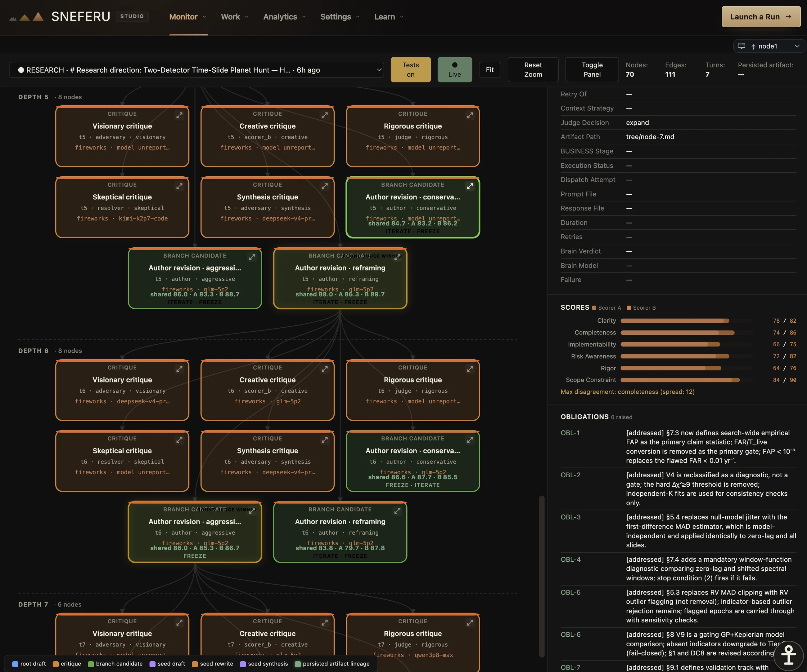
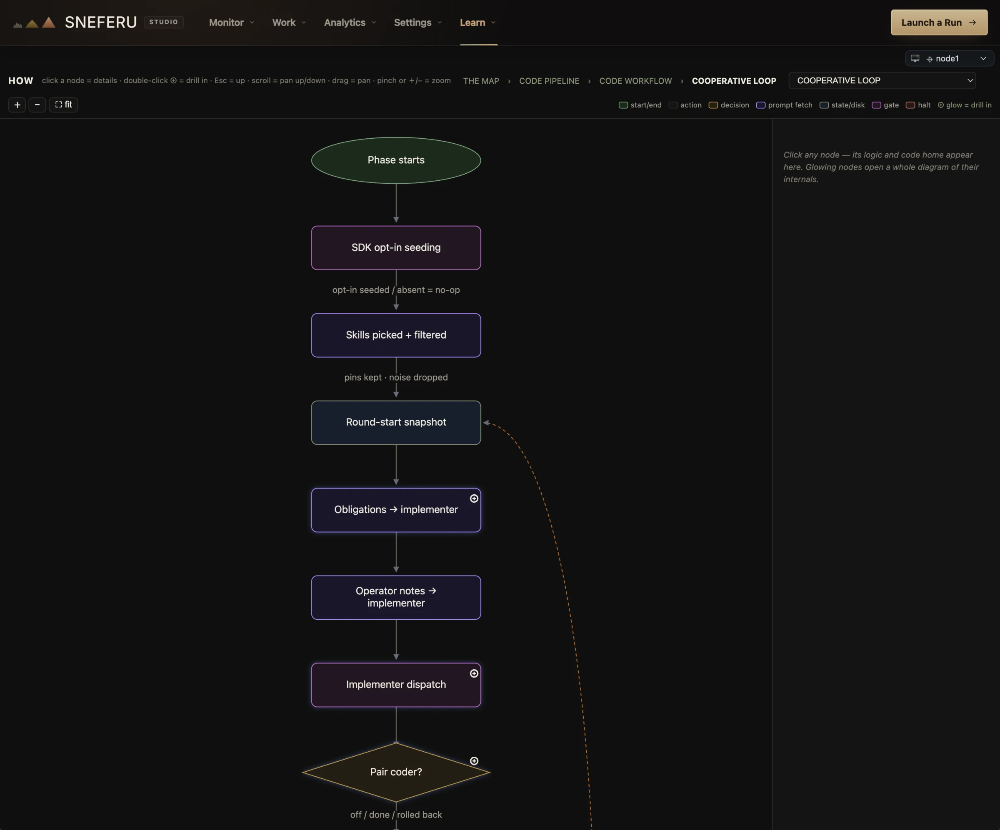
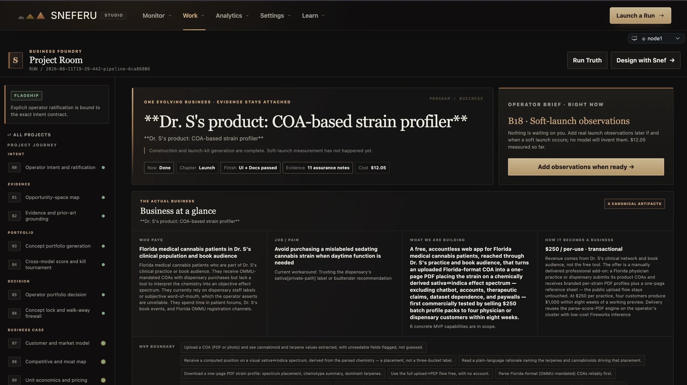
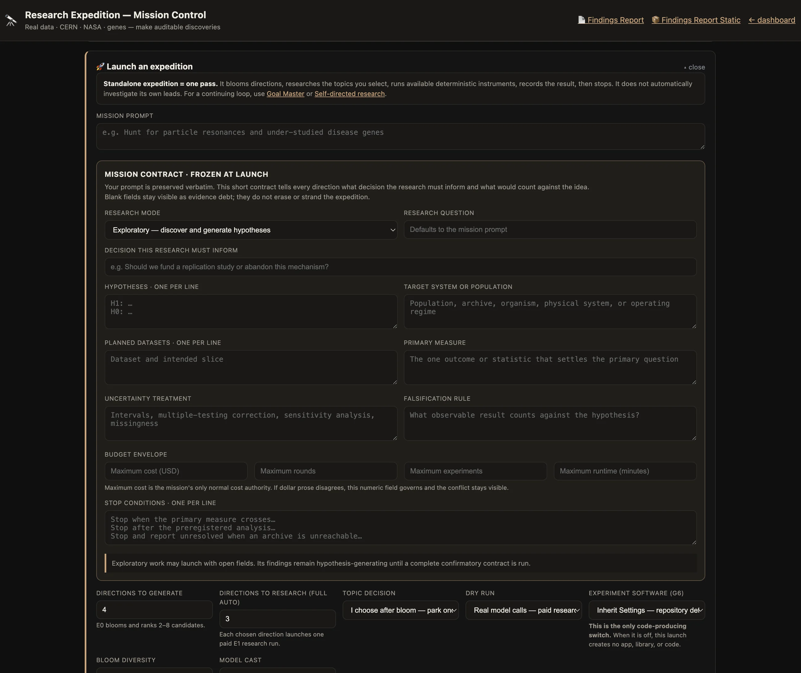
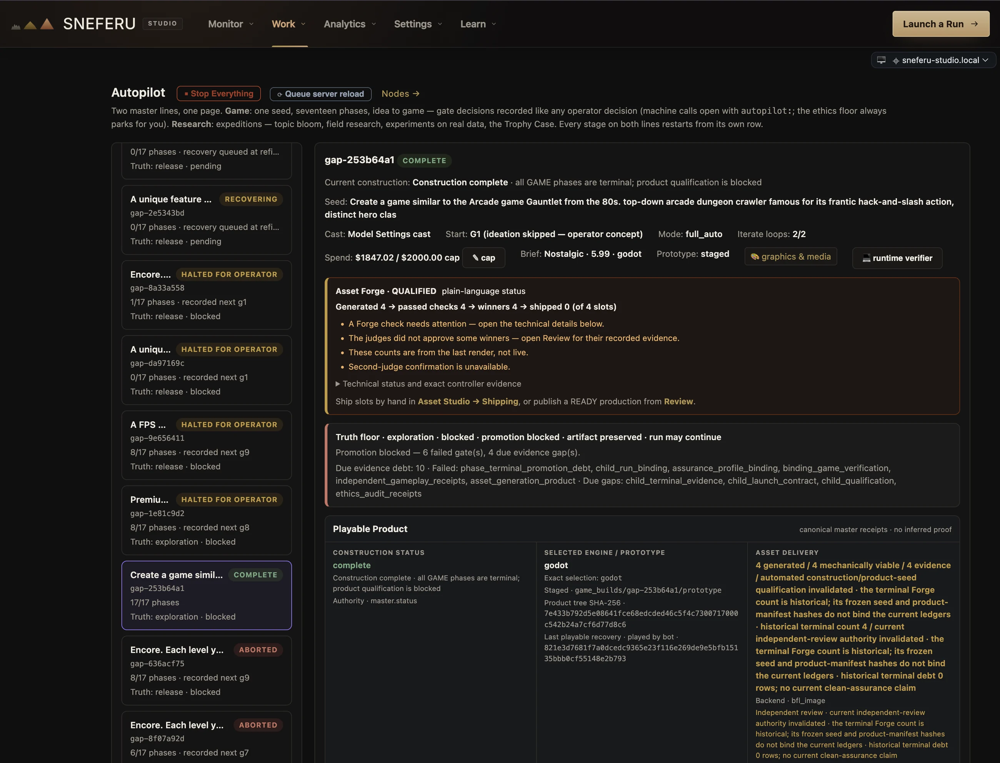
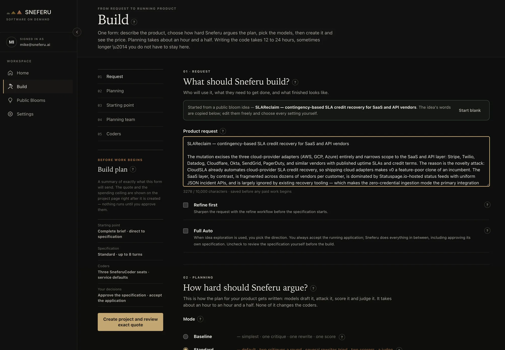
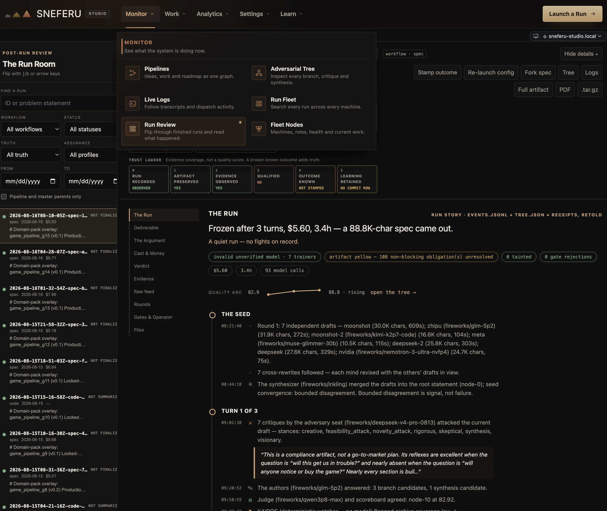

Idea Bloom
Idea BloomGrow the idea first.
Start with what you know. Hundreds of directions are grown, scored twice, and cut. The Bloom Library keeps every judged idea for later.
Sneferu is the system. Everything below is a part of it, and every name here means the same thing on this page, in the product, and in the Atlas. Read it top to bottom, or jump to a part.
Snef is the Sneferu Brain. You tell it what you want in plain language. It reads the live state of the system, pulls in memory and the right tools, and turns your goal into a plan and the right kind of run, with permissions and launch controls intact.
Under the default profile, Snef also reviews every model handoff before it enters a run: is it coherent, on-contract, grounded? That gate keeps the work clean. It never certifies the result; the engine and the evidence do that.
More in the questions
One model writes the proposal. Models from other training lineages attack it from deliberately different stances. Every objection becomes an obligation that has to be resolved. Scorers grade the revisions against explicit rubrics, and a judge decides whether the work has converged, must continue, or should halt.
Disagreement, substitutions, failures, and unresolved obligations are preserved, never averaged away. And agreement is not proof: tests, validators, real data, and runtime evidence can overrule every model in the room.

Turn the goal into a concrete proposal, with constraints and a definition of success.
Independent model lineages test assumptions and put competing approaches on the table.
Resolve objections, compare branches, and improve the work while preserving its history.
Score against the requirements. Let evidence decide. Carry unresolved issues forward explicitly.
The founding rule, in one line: no model grades its own work. The judge never wrote the draft. The tests never read the pitch.
Sneferu Coders take an agreed specification into the real project. An implementer changes the code, a pair coder can improve it, and an independent reviewer challenges the result. Tests and validators feed every failure into another repair round.
Budgets and stop conditions bound the work. A build can finish without qualifying, and the system keeps that distinction visible instead of calling it done.
This is what Software On Demand runs
These are the systems you launch. Each one is a purpose-built production line that runs the engine and keeps the receipts, so research is not forced through a coding loop, and a business is not built in a chat.
Idea BloomStart with what you know. Hundreds of directions are grown, scored twice, and cut. The Bloom Library keeps every judged idea for later.

Business AutopilotIntent, evidence, product, launch, and learning, every stage a real run. First full crossing: 34½ hours, twelve stages, a working product, with a written audit of its own performance.

Research ExpeditionHypotheses, literature, datasets, instruments, experiments, refutation, and review in one record. Findings and unresolved claims travel together.

Game AutopilotSeventeen phases from concept to release material, under a hard budget, with a machine playtest. Construction, proof, and fun are judged separately.
 Goal Master
Goal MasterHolds a long-lived goal, decomposes it into missions, harvests evidence, writes the autopsy, and replans. Instrument Forge grows new senses when the goal needs them.
 Problem Solver
Problem SolverModel-guided search for formal problems, checked by a deterministic verifier. The models propose; the verifier has the last word.
 Demo Studio
Demo StudioCommercial film production for a finished product: every claim in the script must point at evidence the run actually produced.
 Spec Factory
Spec FactoryA finished specification becomes a sequential, accumulating queue of builds on the Tasks board, each one a real run, each one carrying its evidence forward.

Software On DemandThe same engines, brought into a customer workspace: request, agreed specification, build, proof, preview, acceptance, delivery. How SOD works ↗
ESM is Sneferu’s long-term memory. Facts, preferences, decisions, and warnings are typed entries with provenance and confidence. At launch, the relevant ones are retrieved and injected as advice, never as commands. When memory is unavailable, the run proceeds without it.
Conflict checks surface clashing claims. Supersession, review, and retirement let the system update what it remembers while preserving the trail.
See ESM on the homepageEvery run leaves durable state: the configuration, every event, the tree of decisions, the artifacts, the tests, the costs, the failures, and the terminal outcome. Run Truth is the typed closeout that says what a run can honestly claim, and What Failed says exactly what it can’t.
A failure becomes inspectable state, not a vanished conversation. Halts are honest. Costs are reconstructed at current rates: evidence, not a provider bill. Nothing green is manufactured.
Trace it in the Atlas
Nodes run the same software and join a coordinator with signed registration and heartbeats. The coordinator sees health, version, and current work, and delegates runs to nodes that accept them.
The Fleet adds capacity and locality without changing the rules: a delegated run needs the same cast, the same evidence, and the same honest ending as a local one.

Sneferu works across proprietary and open-weight models, and no provider is the product. Every eligible run can become training data (the disagreements, the failures, the tests, the outcomes), curated toward the cases where models split or were overruled by evidence.
The rule holds all the way down: every run can teach Sneferu, and no run can promote itself. Training, evaluation, and promotion stay separate, governed decisions, and independent lineages remain in the certification path.

One model proposes.
Independent minds challenge.
Evidence decides what ships.
The principle behind every part above.